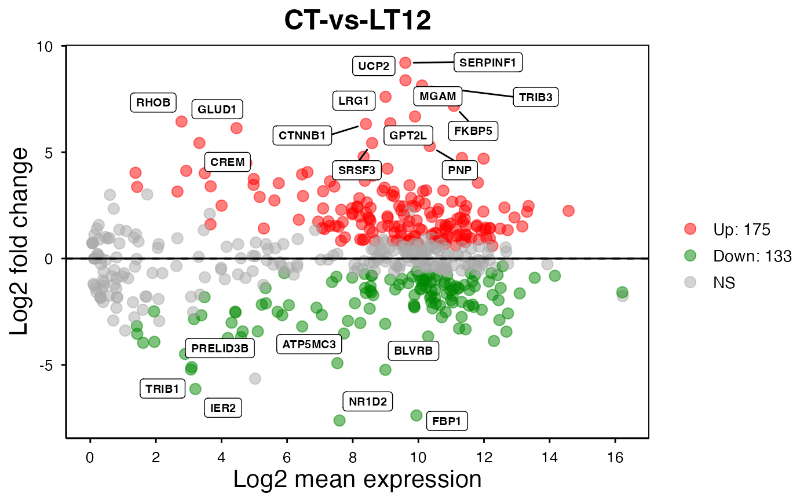
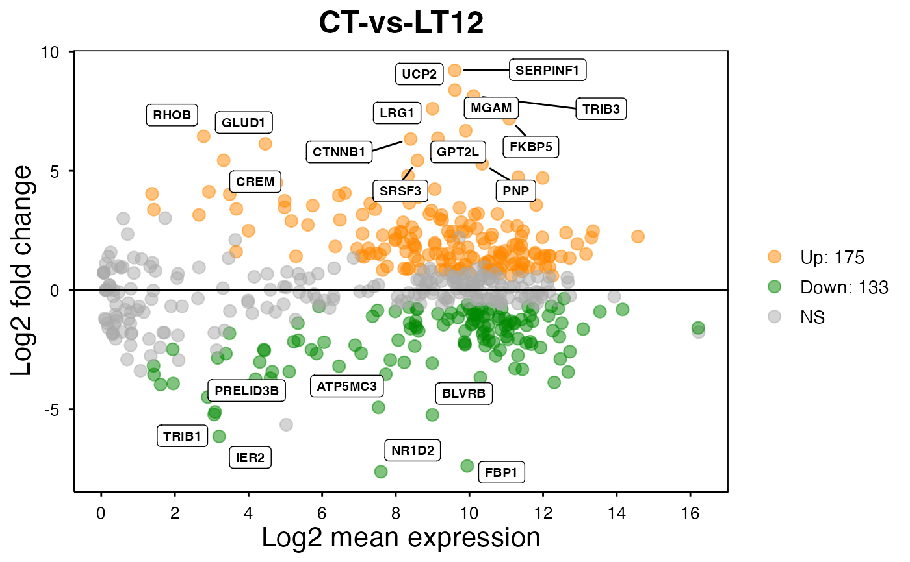
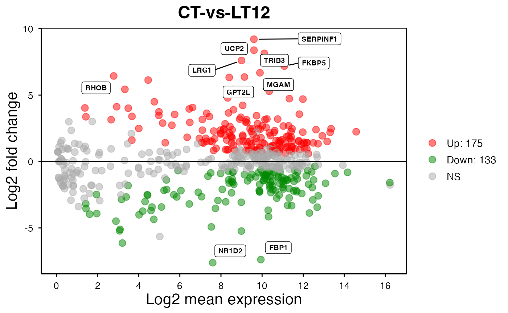

MversusA plot for visualizing differentially expressed genes.
Usage
ma_plot(
data,
foldchange = 1,
fdr_value = 0.05,
point_size = 3,
color_up = "#FF0000",
color_down = "#008800",
color_alpha = 0.5,
top_method = "fc",
top_num = 20,
label_size = 8,
label_box = TRUE,
title = "CT-vs-LT12",
xlab = "Log2 mean expression",
ylab = "Log2 fold change",
ggTheme = "theme_publication"
)Arguments
- data
Dataframe: differentially expressed genes (DEGs) stats 2 (1st-col: Gene, 2nd-col: baseMean, 3rd-col: Log2FoldChange, 4th-col: FDR).
- foldchange
Numeric: fold change value. Default: 1.0, min: 0.0, max: null.
- fdr_value
Numeric: false discovery rate. Default: 0.05, min: 0.00, max: 1.00.
- point_size
Numeric: point size. Default: 1.0, min: 0.0, max: null.
- color_up
Character: up-regulated genes color (color name or hex value). Default: "#FF0000".
- color_down
Character: down-regulated genes color (color name or hex value). Default: "#008800".
- color_alpha
Numeric: point color alpha. Default: 0.50, min: 0.00, max: 1.00.
- top_method
Character: top genes select method. Default: "fc" (fold change), options: "padj" (p-adjust), "fc".
- top_num
Numeric: top genes number. Default: 20, min: 0, max: null.
- label_size
Numeric: label font size. Default: 8.00, min: 0.00, max: null.
- label_box
Logical: add box to label. Default: TRUE, options: TRUE, FALSE.
- title
Character: plot title. Default: "CT-vs-Trait1".
- xlab
Character: x label. Default: "Log2 mean expression".
- ylab
Character: y label. Default: "Log2 fold change".
- ggTheme
Character: ggplot2 themes. Default: "theme_publication", options: "theme_default", "theme_bw", "theme_gray", "theme_light", "theme_linedraw", "theme_dark", "theme_minimal", "theme_classic", "theme_void"
Examples
# 1. Library TOmicsVis package
library(TOmicsVis)
# 2. Use example dataset
data(degs_stats2)
head(degs_stats2)
#> name baseMean log2FoldChange padj
#> 1 A1I3 0.1184475 0.0000000 NA
#> 2 A1M 1654.4618140 0.6789538 5.280802e-02
#> 3 A2M 681.0463277 1.5263838 3.920000e-07
#> 4 A2ML1 389.7226640 3.8933573 1.180000e-14
#> 5 ABAT 364.7810090 -2.3554014 1.559230e-04
#> 6 ABCC3 1.1346239 1.2932740 4.491812e-01
# 3. Default parameters
ma_plot(degs_stats2)

# 4. Set color_up = "#FF8800"
ma_plot(degs_stats2, color_up = "#FF8800")

# 5. Set top_num = 10
ma_plot(degs_stats2, top_num = 10)
